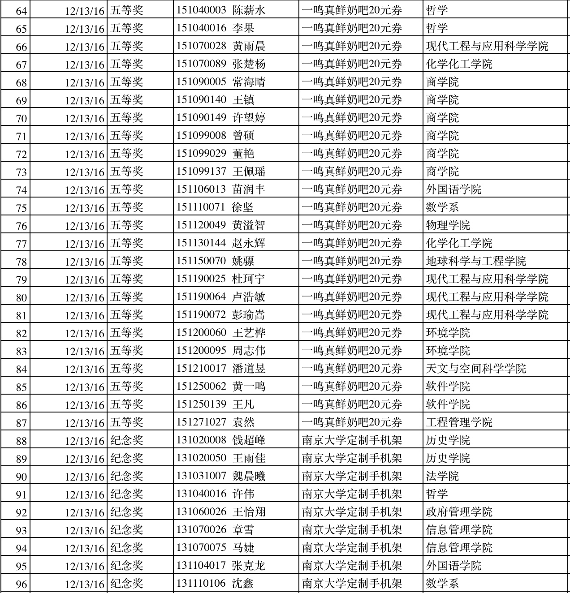
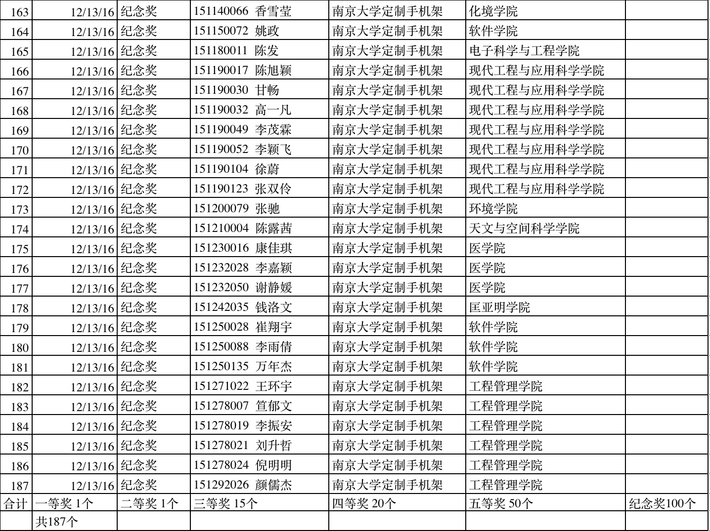
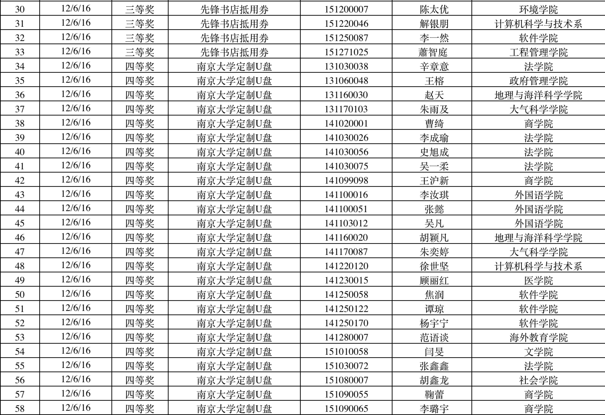

亲爱的同学们，
答题时间初定为2016年11月29日至2016年12月20日。SERU课题组将根据同学们的答题时间进行抽奖，具体奖项和抽奖时间请见SERU相关情况介绍。
2016年12月6日，SERU课题组在仙林校区仙I-113教室根据12月6日之前的问卷填写情况进行了第一波抽奖，获奖名单附后。为保证本次抽奖的公平、公正、公开，我们邀请了参与调查的同学参与并监督抽奖，另外也进行了全程录像。第一次抽奖获奖名单请戳这里 。第一次抽奖视频录像请戳这里。
2016年12月13日，SERU课题组在仙林校区仙I-113教室根据12月6日-12日的问卷填写情况进行了第一波抽奖，获奖名单附后。为保证本次抽奖的公平、公正、公开，我们邀请了参与调查的同学参与并监督抽奖，另外也进行了全程录像。第二次抽奖视频录像请戳这里。
SERU课题组
2016年12月6日
2016年12月6日
本次调查的奖品为：
- 特等奖：9.7 英寸 iPad Pro 1部
- 一等奖：iPad mini4 2部
- 二等奖：小米手环2 4个
- 三等奖：先锋书店抵用券 120张
- 四等奖：南京大学定制精美U盘 100个
- 五等奖：一鸣真鲜奶吧抵用券 400张
- 纪念奖：定制精美手机架 600个
第二次抽奖获奖名单


第一次抽奖获奖名单


 回到顶部
回到顶部